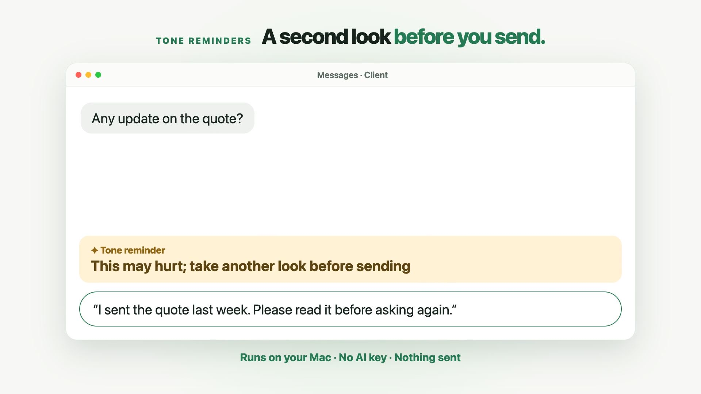

Parroting Journal
Practical Mac guides
Real-world guides on voice typing, communication, and useful Mac workflows.

Mac · 2026-10-27
Voice Typing on Mac: Dictation, AI Cleanup & Translation
A practical guide to Mac dictation, direct voice-to-text insertion, Chinese-to-English translation, AI cleanup, tone suggestions and personal vocabulary.
Read more →